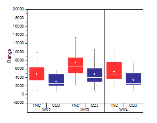
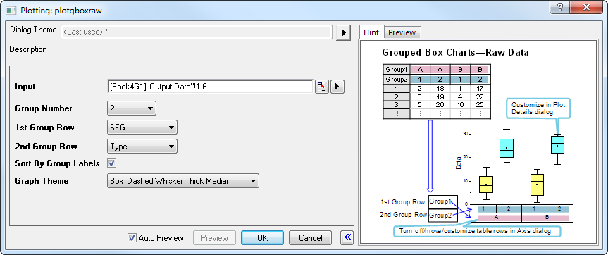
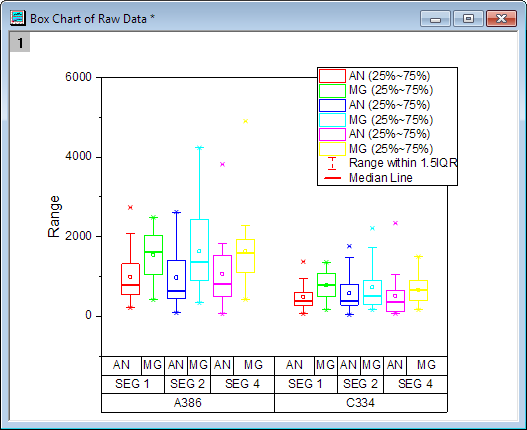

Gruppierte Boxdiagramme, Roh
GroupedBoxCharts-RawData
Warnung: Die Anzeige des Titels "Gruppierte Boxdiagramme - Rohdaten" überschreibt den vorherigen Anzeigetitel "Gruppierte Boxdiagramme Rohdaten".

Datenanforderungen
Das Diagramm muss aus Arbeitsblattspalten erstellt werden, die nach einer oder mehreren Spaltenbeschriftungszeilen gruppiert werden sollen.
Diagramm erstellen
Wählen Sie die gewünschten Daten aus.
Wählen Sie im Menü .
oder
Klicken Sie auf die Schaltfläche Gruppierte Boxdiagramme, Roh  auf der Symbolleiste 2D-Grafiken.
auf der Symbolleiste 2D-Grafiken.
Legen Sie in dem sich öffnenden Dialog plotgboxraw die Gruppenanzahl und die Quelle für jede Gruppe fest, um das gruppierte Boxdiagramm aus den Rohdaten zu erstellen. Dieser Dialog verwendet die X-Funktion plotgboxraw.
Weitere Einzelheiten zum Erstellen und benutzerdefinierten Anpassen finden Sie auf der Seite zum Boxdiagramme erstellen.
Dialog plotgboxraw

| Eingabe |
Dieses Feld wird zum Festlegen der Eingabedaten verwendet. |
| Gruppenanzahl |
Legen Sie die Anzahl der zu verwendenden Gruppierungsbereiche fest. Kann 0 sein (keine Gruppierung) oder eine ganze Zahl bis zu 5. |
| nte Gruppenzeile |
Wählen Sie aus einer Liste von Spaltenbeschriftungszeilen, um die Gruppierungsvariable zu bestimmen. Die Eingabespalten werden nach der Variable in der ersten Gruppenzeile zuerst gruppiert. Dann werden sie weiter nach der zweiten Gruppenzeile gruppiert. Der Rest kann auf die gleiche Weise folgen. |
| Nach Gruppenbeschriftungen sortieren |
Ordnen Sie Zeichnungen in aufsteigender Reihenfolge der Gruppenbeschriftungen, indem Sie eine geschachtelte Sortierung nach Reihenfolge der Gruppierungszeilen durchführen. Arbeitsblattspalten werden nicht neu geordnet. |
| Diagrammdesign |
Wählen Sie aus einer Liste von Boxdiagrammdesigns, einschließlich einer Reihe von vordefinierten Designs. |
Zusätzlich können Sie sich das finale Diagramm in diesem Dialog anzeigen lassen.
Beispiele
 |
- Klicken Sie auf Datei: Sample-Projekt öffnen: Tutorialdaten, um das Sample-Projekt zu öffnen. Navigieren Sie dann im Projekt Explorer zu dem Ordner Grouped Box Plot and Axis Tick Table und aktivieren Sie die Arbeitsmappe Book3G.
- Die Daten in dem Arbeitsblatt MG.AN sind Rohdaten. Wir werden ein gruppiertes Boxdiagramm aus ihnen erstellen, so dass jede Datenspalte als eine Box gezeichnet wird. Die Boxen werden auf Grundlage der Gruppierung nach Langname, Kommentaren und benutzerdefinierten Parameter: machine gruppiert.
- Markieren Sie die Spalten von C bis N und wählen Sie Zeichnen: Statistikdiagramme: Gruppierte Boxdiagramme, Roh im Hauptmenü, um den Dialog plotgboxraw zu öffnen.
- Setzen Sie die Gruppenanzahl auf 3 und wählen Sie Machine, Kommentare und Langname für die 1. Gruppenzeile, 2. Gruppenzeile bzw. 3. Gruppenzeile.
- Wenn Sie Gruppen/Teilgruppen in aufsteigender Reihenfolge sortieren möchten, aktivieren Sie Nach Gruppenbeschriftungen sortieren.
- Wählen Sie die Option Box_Dashed Whisker Thick Median unter Diagrammdesign und klicken Sie auf OK, um die Zeichnung zu erstellen.
- 
Hinweis:
- Zum Anpassen der Boxengröße und -abstände klicken Sie doppelt auf die Zeichnung, um Details Zeichnung zu öffnen. Wählen Sie die obere Datenzeichnung im linken Bedienfeld (möglicherweise müssen Sie den Zweig Layer erweitern). Gehen Sie dann zur Registerkarte Abstände, um die Einstellungen zu ändern.
- Sie können Hilfsstrichsbeschriftungen verschieben, einschließlich Hilfsstrichsbeschriftungen in Tabellen, indem Sie die Beschriftungen auswählen und die Pfeiltasten Ihrer Tastatur verwenden.
|
|
Vorlage
BOX.OTP (im Origin-Ordner installiert)
Hinweise
- Wenn die Gruppenanzahl größer als 1 ist, wird die Hilfsstrichsbeschriftung der X-Achse standardmäßig in Tabellen angezeigt. Sie können dieses Format im Zweig Tabelle auf der Seite Beschriftung der Hilfsstriche des Dialogs Achsen festlegen.
- Solange die Gruppenanzahl nicht 0 ist, ist Untergruppierung auf der Registerkarte Gruppe basierend auf der 1. Gruppenzeile aktiviert. Sie können den Abstand zwischen oder innerhalb der Teilgruppen separat auf der Registerkarte Abstände festlegen.
- Sie können die Legende, die speziell für Boxdiagrammkomponenten ausgelegt ist, erstellen/benutzerdefiniert anpassen, indem Sie im Menü auf Grafik: Legende: Boxdiagrammkomponenten klicken, wenn das Boxdiagramm aktiv ist.
- Es ist möglich, ein gruppiertes Boxdiagramm aus Indexdaten zu erstellen.
- Wenn Sie Box_Column Scatter als Diagrammdesign auswählen, können Sie ein gruppiertes Punkt-Säulendiagramm erstellen.
- Wenn Sie Box_Connect Mean Line als Diagrammdesign auswählen, können Sie ein gruppiertes Boxdiagramm mit einer verbundenen Mittelwertlinie erstellen.
- Wenn Sie Box_Interval Plot als Diagrammdesign auswählen, können Sie ein gruppiertes Intervalldiagramm erstellen.